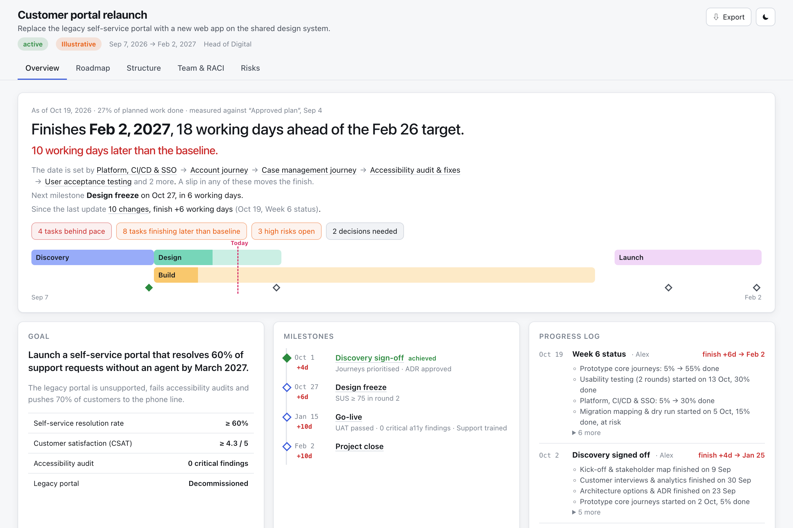
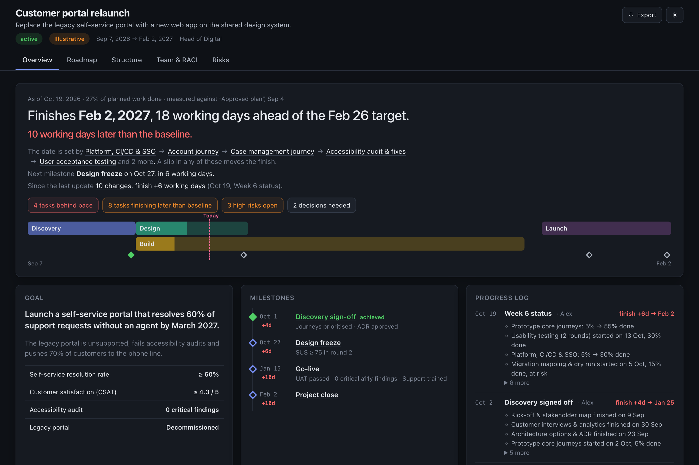
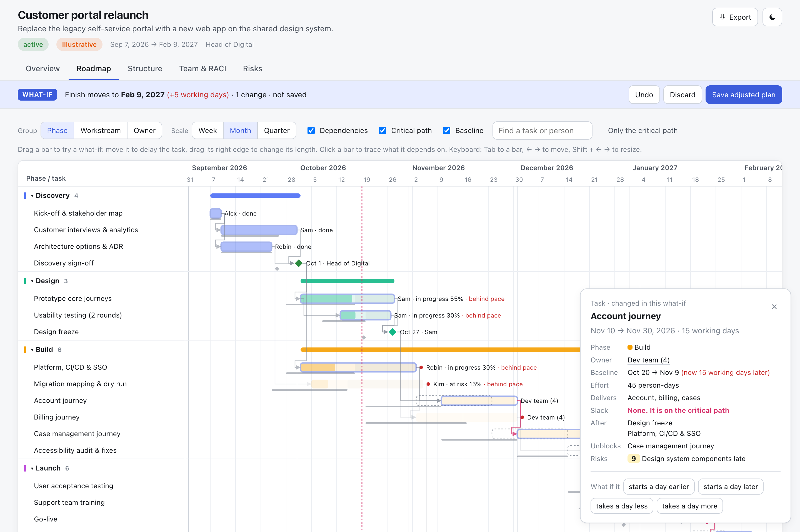
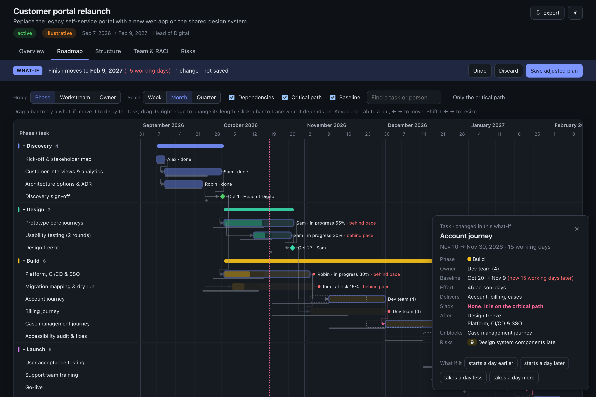

planify turns a brief into a validated, scheduled project plan: a roadmap with the real critical path, a work breakdown, the organisation, a RACI and a risk map. You get one HTML file that opens on the answer and lets anyone drag a task to see what happens.
Standalone HTML with no server, no account and no build step. Email it, attach it to a ticket, or drop it in Confluence. Light and dark themes, print-to-PDF, and exports to PNG, SVG, Markdown, CSV and JSON.
Opens on the verdict: finish date against target, the tasks that set it, and what is behind.
A Gantt chart with dependencies, milestones, the computed critical path and drag-to-simulate what-ifs.
Phase gates, a work breakdown with roll-up progress, the organisation chart and governance forums.
A responsibility matrix with exactly one accountable person per row, plus workload against capacity.
A 5×5 heat map and a register linked to the tasks each risk threatens.


Most plan templates are dashboards of disconnected numbers. planify models the plan as a real schedule and builds every view on that model.
“Finishes 19 Jan, 28 working days ahead of target. The date is set by design freeze → account journey → UAT.” The page does the arithmetic for the reader.
Move or stretch any bar, by mouse or arrow keys. The real scheduler reruns, the finish date and critical path update, and the original dates stay as outlines. Undo it, or save the adjusted plan.
Dates come from dependencies, so impossible dates are errors, not decoration. Invented facts are marked Illustrative. A missed target is stated outright.
Click a person, phase, milestone or risk anywhere and the roadmap focuses on it. No cross-referencing between tabs in your head.


The same approach as archify, applied to plans. A zero-dependency Node CLI checks every candidate before anyone sees it, and returns error codes with concrete fix hints that the agent applies on its own.
candidate.plan.json: goal, phases, WBS, roles, tasks, milestones, risks.Freeze the agreed plan as a baseline. Tell your agent what happened each week. planify records actual dates, forecasts the rest from today and writes the change log for you.
Every date, milestone and the finish show how far they have moved: “10 working days later than the baseline, still 18 ahead of target.”
Unfinished work is forecast from today, from its remaining share. A late task pushes everything after it, and the critical path follows.
A task at 30% that should be at 100% by now is flagged behind pace while there is still time to act.
Each update is diffed against the last: “Platform 5% → 30% · Go-live moves to 15 Jan (was 7 Jan) · New risk: SSO tenant.”
# once the sponsor agrees the plan node bin/planify.mjs baseline plan.json --label "Approved at kick-off" # every week, after editing statuses and actual dates node bin/planify.mjs update plan.json --summary "Week 6 status"
# clone into your skills folder git clone https://github.com/filipromeling-max/planify.git \ ~/.claude/skills/planify # check the install node ~/.claude/skills/planify/bin/planify.mjs doctor
Then just ask your agent: